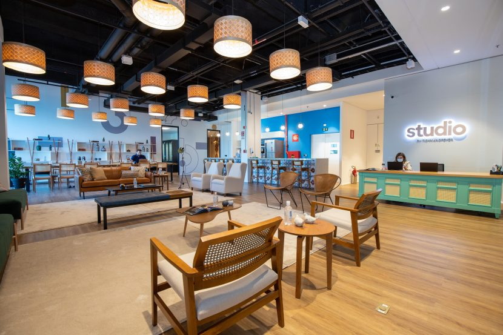

SEU
PERFIL ✳
PERFIL ✳
VOCÊ PODE GOSTAR DE
Descubra seus talentos, explore suas possibilidades e encontre uma carreira que combine com você.
DESCOBRIR MEU PERFIL ↗
Às vezes, tudo começa com uma pergunta: o que combina comigo?
Responda com sinceridade. Não existem respostas certas ou erradas. O objetivo é conhecer melhor seus interesses e descobrir caminhos que talvez você ainda não tenha considerado.
Preencha seus dados e escolha a alternativa que mais combina com você.
Pelas suas respostas, este perfil pode combinar com seus interesses. Explore-o sem medo de descobrir novas possibilidades.
Suas respostas não definem seu futuro. Você pode desenvolver novas habilidades e mudar de ideia ao longo do tempo.
Conheça algumas opções e imagine tudo o que você pode criar a partir delas.
Transformar ideias em ferramentas digitais e soluções para o dia a dia.
↗Investigar perguntas, analisar evidências e ampliar o conhecimento.
↗Dar forma visual a ideias, marcas, campanhas e histórias.
↗Conectar pessoas, organizar etapas e transformar planos em realidade.
↗